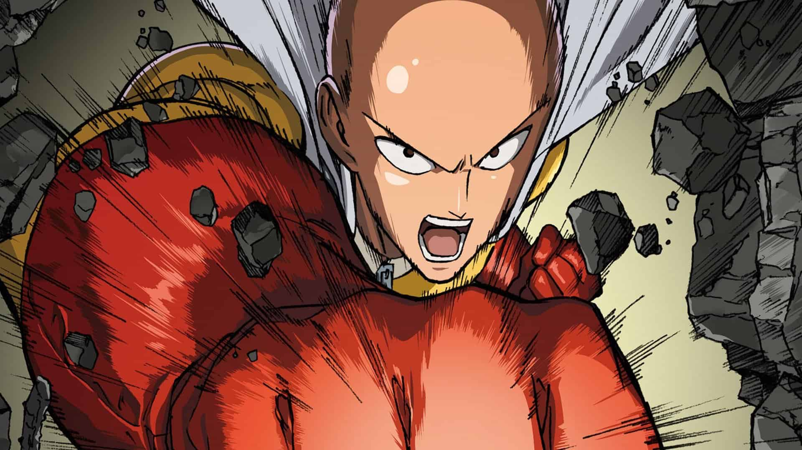

Saitama est un jeune homme sans emploi, déprimé et sans but profond dans sa vie. Un jour, il rencontre un homme-crabe qui recherche un jeune garçon « avec un menton fendu comme un cul » selon ses termes. Saitama finit par rencontrer ce jeune garçon et décide de le sauver de l'homme-crabe, qu'il arrive à battre difficilement. Dès lors, Saitama décide de devenir un super-héros et s’entraîne pendant trois ans très sérieusement : 100 pompes, 100 squats, 100 abdos et 10 km de course au quotidien et il n'y a pas de conditions de chauffage ni de climatisation . À la fin de son entrainement « si intense qu'il en perd ses cheveux », il remarque qu'il est devenu tellement fort qu'il parvient désormais à battre tous ses adversaires d'un seul coup de poing. Sa force démesurée est pour lui source de problèmes, puisqu'il ne trouve pas d'adversaires à sa taille et s'ennuie dans son métier de héros car les combats ne lui procurent plus aucune sensation ni aucune adrénaline...
Bien qu'il ait mis un terme à un bon nombre de menaces toutes plus dangereuses les unes que les autres, personne ne semble remarquer l'incroyable capacité de Saitama, à l'exception de son ami et disciple Genos, un jeune homme devenu cyborg.
Source 